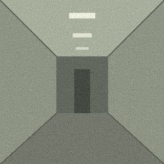
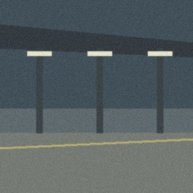
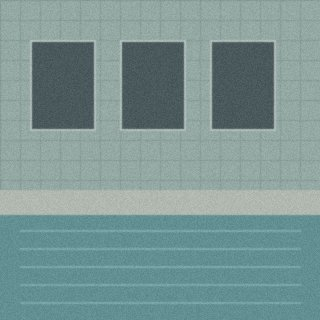
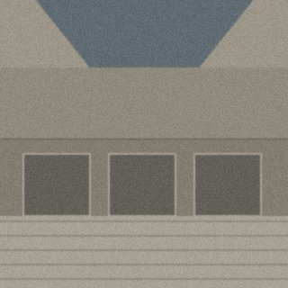
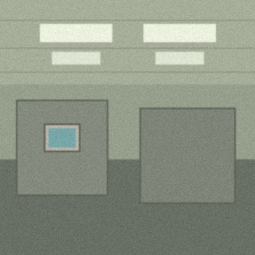
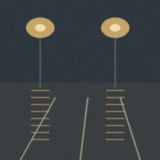
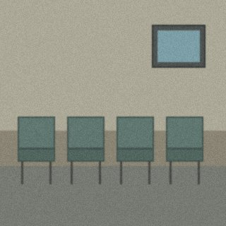
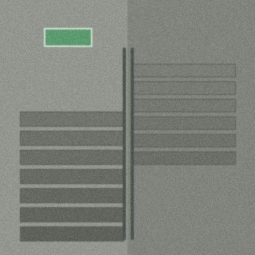

CAMERA: SONY DIGITAL MAVICA FD-95
FILE: FD_DISK_01.JPG
STORAGE: 3.5" FLOPPY DISK (08 FILES)
KHUNG NGẮM ẢNH CHI TIẾT (NHẤN VÀO MỘT TRONG 08 ẢNH BÊN DƯỚI ĐỂ XEM)
2001.10.14 18:42

01. Empty Corridor
Hành lang tầng 3 sau giờ tan học, ánh đèn huỳnh quang phản chiếu trên sàn gạch cũ tạo cảm giác yên tĩnh và quen thuộc.
MỞ PLAYLIST RIÊNG CỦA ALBUM NÀY (05 BÀI) »DANH SÁCH 08 ẢNH TRONG ĐĨA MỀM A:\DCIM\
01. Empty Corridor

02. Platform 4 Midnight

03. Indoor Pool

04. Closed Mall Atrium

05. Fluorescent Office

06. Rainy Parking Lot

07. Empty Waiting Room

08. Quiet Stairwell